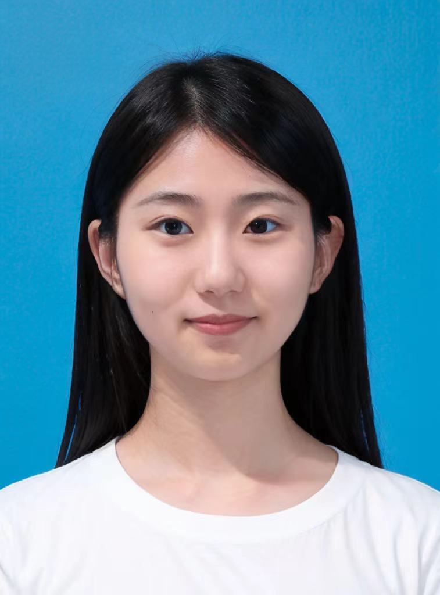

Visual Generation
Diffusion models, flow matching, image generation, and high-quality controllable synthesis.
I am a Ph.D. student in Computer Science at Fudan University. My research focuses on visual generative models, especially diffusion and flow-based image/video generation, human-centric video generation, and efficient generative model training and inference.

Research
Diffusion models, flow matching, image generation, and high-quality controllable synthesis.
Large-scale video datasets, motion-aware filtering, portrait animation, and talking video generation.
Pyramidal patchification, accelerated inference, and reducing train-test discrepancy in generative models.
Selected Work
ICLR 2026
A pyramidal patchification strategy for diffusion and flow-based models that improves generation efficiency while preserving or improving visual quality.
Academic Service
Background
Ph.D. in Computer Science and Technology, School of Computer Science
M.S. in Mathematics, College of Artificial Intelligence
B.S. in Information and Computing Science, School of Mathematics
Algorithm Engineer. Worked on ControlGIF for image-to-video generation and video editing with AnimateDiff and ControlNet.